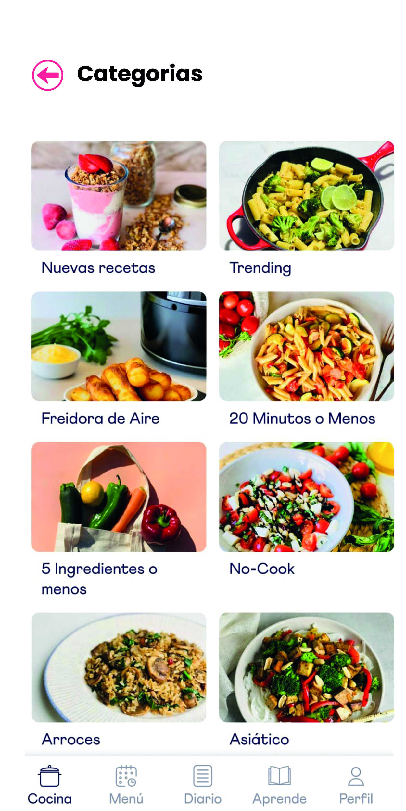
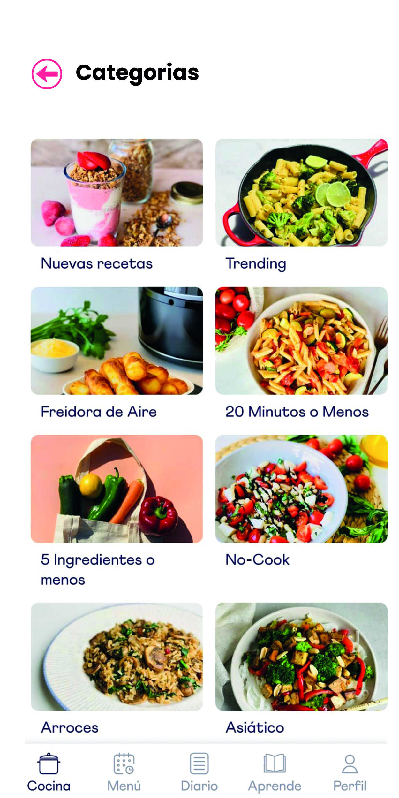
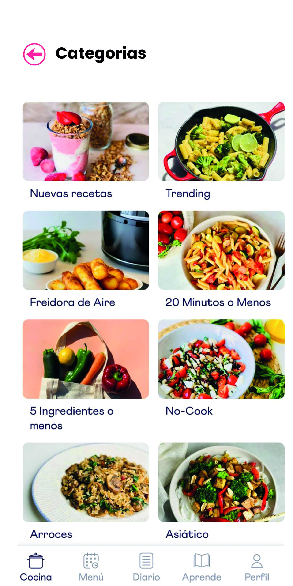

¡Con nuestra app vas a descrubrir lo facil que es cocinar!
 


Descubri recetas fáciles y nutritivas basadas en los ingredientes que tienes en tu cocina. Mas de 2000 recetas deliciosas y sencillas.
Descarga la App!


"Increíble lo fácil que es usar esta app. ¡Ya no tiro comida y siempre tengo algo saludable para cocinar!" – Isabella López

"Me ha salvado muchas veces cuando no sabía qué cocinar. ¡Totalmente recomendable!" – Salvador Gutierrez

"Ahora comer sano es parte de mi rutina diaria. Gracias por hacerlo tan simple." – Rufina Silva